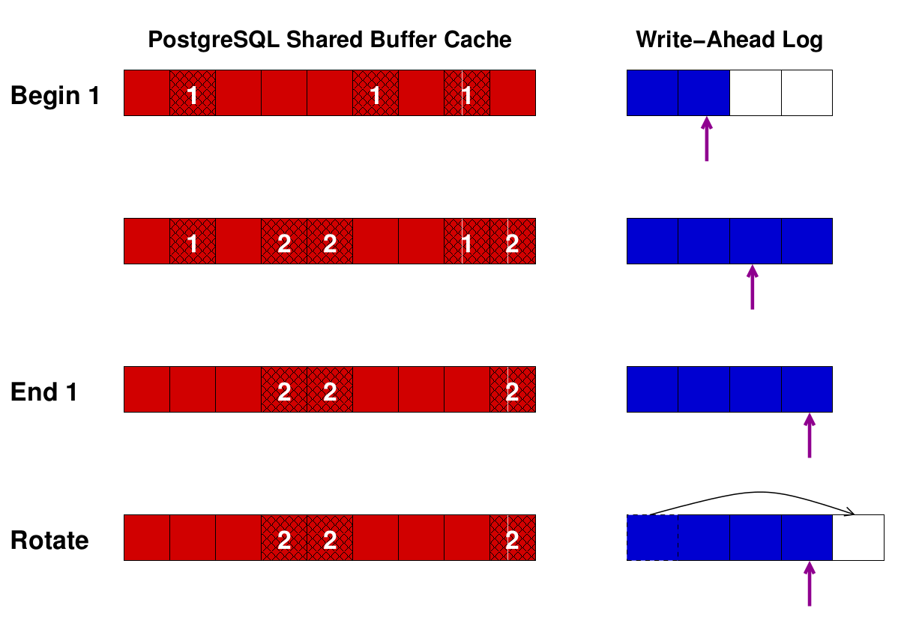

Checkpoints¶
What's is a checkpoint ?¶
This is a good reading from 2nd quadrant.
Data are first written to WAL (Write Ahead Log) files before being copied to data files. That way to process ensures durability : in case of a crash, database will use WAL to recover data and write them to data files.
Users only have to wait for WAL files to be flushed to disk to have data available in DB. By this time, RAM cache could be used for users and be flushed to disk later.
A checkpoint writes all dirty pages from memory to disk, marks them as “clean" in shared_buffers, and stores information that all of wal up to now is applied : WAL files are not needed before the checkpoint position.

In practice, we often want to find a good ratio between :
- having not too frequent checkpoints so IO for buffers is spread on a large amount of time
- but frequent enough to limit the recovery time after a crash and to limit the disk usage for WAL files
What trigger checkpoints ?¶
Basically, timeout or size :
- it's been more than the
checkpoint_timeoutvalue since previous checkpoint ended - WAL folder (
/pgsql_folder/pg_xlog/before version 10 or/pgsql_folder/pg_wal/since) if full. Its size could not be more than themax_wal_sizevalue.
Checkpoints should be mostly triggered by timeout, not size.
Spread checkpoints¶
Checkpoints is basically a writing to disk of dirty buffers. Its job must be done during a fraction of the checkpoint total time, fraction set by the checkpoint_completion_target parameters (0.5 by default).
Checkpoint and Linux Cache¶
Linux cache by default can handle a great amount of data before flushing it to the storage. It could be harmful for the checkpoint process. If we tune the checkpoint to spread the writing on a quite long time and the OS cache get it and flush all at a single time, it will create an I/O pike.
It could be better not to let the cache keep too much data and be force to flush it more frequently.
See details on how to tune Linux Kernel for Database performance usage.
Control activity¶
Of course, stats could be gathered. But also, a global status of the server is available by the command /usr/lib/postgresql/9.6/bin/pg_controldata /var/lib/postgresql/9.6/main/ and outputs :
pg_control version number: 960 Catalog version number: 201608131 Database system identifier: 6382382084904487037 Database cluster state: in production pg_control last modified: Tue 23 Jan 2018 10:24:56 AM CET Latest checkpoint location: 1D70/D4518DB8 Prior checkpoint location: 1D6F/58F47450 Latest checkpoint's REDO location: 1D6F/80331B08 Latest checkpoint's REDO WAL file: 0000000100001D6F00000080 Latest checkpoint's TimeLineID: 1 Latest checkpoint's PrevTimeLineID: 1 Latest checkpoint's full_page_writes: on Latest checkpoint's NextXID: 0:265937941 Latest checkpoint's NextOID: 17869586 Latest checkpoint's NextMultiXactId: 1 Latest checkpoint's NextMultiOffset: 0 Latest checkpoint's oldestXID: 70567326 Latest checkpoint's oldestXID's DB: 20430 Latest checkpoint's oldestActiveXID: 0 Latest checkpoint's oldestMultiXid: 1 Latest checkpoint's oldestMulti's DB: 20430 Latest checkpoint's oldestCommitTsXid:0 Latest checkpoint's newestCommitTsXid:0 Time of latest checkpoint: Tue 23 Jan 2018 09:03:56 AM CET Fake LSN counter for unlogged rels: 0/1 Minimum recovery ending location: 0/0 Min recovery ending loc's timeline: 0 Backup start location: 0/0 Backup end location: 0/0 End-of-backup record required: no wal_level setting: minimal wal_log_hints setting: off max_connections setting: 200 max_worker_processes setting: 8 max_prepared_xacts setting: 0 max_locks_per_xact setting: 256 track_commit_timestamp setting: off Maximum data alignment: 8 Database block size: 8192 Blocks per segment of large relation: 131072 WAL block size: 8192 Bytes per WAL segment: 16777216 Maximum length of identifiers: 64 Maximum columns in an index: 32 Maximum size of a TOAST chunk: 1996 Size of a large-object chunk: 2048 Date/time type storage: 64-bit integers Float4 argument passing: by value Float8 argument passing: by value Data page checksum version: 0
That is a mix of settings and running statuses.